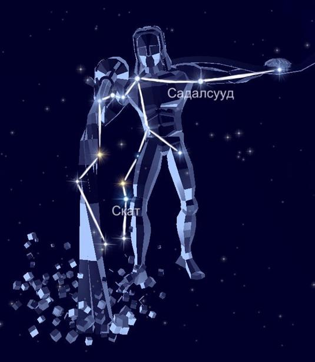

В южном полушарии неба уверенно расположилось знаменитое созвездие Водолей. Поскольку охватывает 980 квадратных градусов, стоит на 10 месте среди всех звёздных частей. Из-за огромной площади граничит с множеством южных созвездий. Его название означает того, кто несёт чашу воды, проще говоря, водоноса.
Миф о происхождении.
Водолей символизирует Ганимеда, прекрасного юношу родом из Фригии. Ганимед был сыном Троса, царя Трои. Ганимед был похищен Юпитером, когда он направлялся со стадом своего отца на гору Ида. Царь богов был восхищен красотой юноши. Он спустился с горы в виде большой птицы и унес Ганимеда на небеса. С тех пор Ганимед стал слугой, подающим вино для гостей (виночерпием богов).
Звёзды, образующие созвездие Водолей.
Самая яркая на участке Бета — Садальсууд, в переводе её имя означает самую удачную удачу.
На удивление, Альфа — Садальмелик занимает второе место по яркости. По аналогии с Бетой, является сверхгигантом жёлтого цвета. Название в переводе значит счастье и удача короля.
Третье место, по праву, отходит к Дельте. По-другому её называют Скат, что означает нога.
Затем следует Дзета, которая выражена двойной системой. В переводе название обозначает удача купца.
Лямбда и Тау — гиганты.
Эпсилон — Албали, что переводится как проглатывающий.
Гамма — Садахбия, то есть счастье и удача в доме. Эта и Омега являются субгигантами.
Тета — Анха, чьё имя означает тазовая кость, представляет субкарлик.
А вот Фи, Сигма и Пси относятся к двойным звёздным системам.
Йота бело-голубой субкарлик.
Также можно выделить звезду под названием Ситула, которая в созвездии отображает кувшин с водой.
Как оказалось, в созвездии находится более десяти звёзд с экзопланетами.
Так как видимость области приходится на широте от +65 до -87 градусов, то она доступна для жителей южных и центральных районов России. Лучшее время для наблюдения отмечается в августе и сентябре.
|

|